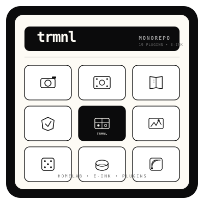

1-bit e-paper aesthetic: thick bezel, warm paper screen, and a 3×3 grid where each cell is a plugin family. Center cell is inverted — the TRMNL core. Works at 16px favicon up to 1024px social preview. Single SVG, no fonts required.

Usage: <img src="assets/logo.svg" width="64"> in README. Export PNG via rsvg-convert -w 1024 assets/logo.svg -o assets/logo.png.
Social preview: place on #0B0B0C with 64px padding.
Glyphs — cam (immich), film (jellyfin), book (mealie/booklore), shield (adguard), grid (trmnl), graph (opencode), dice (boardgamegeek), disk stack (scrutiny/backrest), rss (freshrss/wallabag). Replace center label for per-plugin variants.